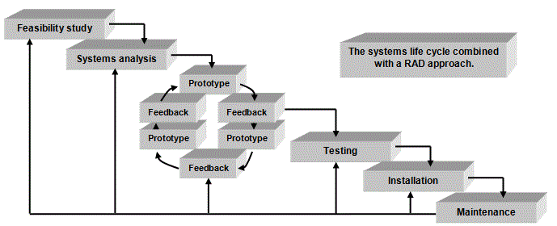

<div id="jsn-maincontent" class="span9 order1 row-fluid">
  <div id="jsn-maincontent_inner">
    <div id="jsn-centercol">
      <div id="jsn-centercol_inner">
        <div id="jsn-mainbody-content" class="jsn-hasmainbody">
          <div id="jsn-mainbody-content-inner1">
            <div id="jsn-mainbody-content-inner2">
              <div id="jsn-mainbody-content-inner3">
                <div id="jsn-mainbody-content-inner4" class="row-fluid">
                  <div id="jsn-mainbody-content-inner" class="span12 order1">
                    <div id="jsn-mainbody">
                      <div id="system-message-container"></div>

                      <div
                        class="item-page"
                        itemscope
                        itemtype="https://schema.org/Article"
                      >
                        <meta itemprop="inLanguage" content="en-GB" />

                        <div itemprop="articleBody">
                          <p>&nbsp;</p>
                          <h1 style="text-align: center">
                            Rapid Application Development (RAD)
                          </h1>
                          <p>
                            Another approach to project management is Rapid
                            Application Development (RAD). This is an
                            alternative to the waterfall model approach,
                            although it is often combined with the waterfall
                            model. RAD has become important in recent years
                            because of the rise of something called 'Object
                            Oriented Programming'.
                          </p>

                          <p>
                            The traditional waterfall approach has some
                            drawbacks. For example, it can take a while for
                            customers to actually see the final product. Another
                            concern is that software produced using this
                            approach in theory is easy to change but in practice
                            is difficult. The RAD approach is different to the
                            classic systems life cycle. It involves designing
                            and building a series of prototypes. After each one
                            is built, the user is involved. They are asked to
                            try out and comment on features and test some of the
                            functions. Their comments are then fed back into the
                            next design and prototype and a better one is
                            produced. This process is repeated until the product
                            is finished. After each round, the product gets
                            closer to the desired end product. The product is in
                            effect developed a little bit at a time but
                            constantly involves the customer throughout the
                            development process. It is very common to combine
                            the classic waterfall model with this rapid
                            application prototyping approach; the waterfall
                            model is followed, but the design and implementation
                            stages involve the user commenting on a series of
                            prototypes.
                          </p>
                          <p>
                            <strong
                              >&nbsp;</strong
                            >
                          </p>
                          <p>&nbsp;</p>
                        </div>
                      </div>
                    </div>
                  </div>
                </div>
              </div>
            </div>
          </div>
        </div>
      </div>
    </div>
  </div>
</div>
